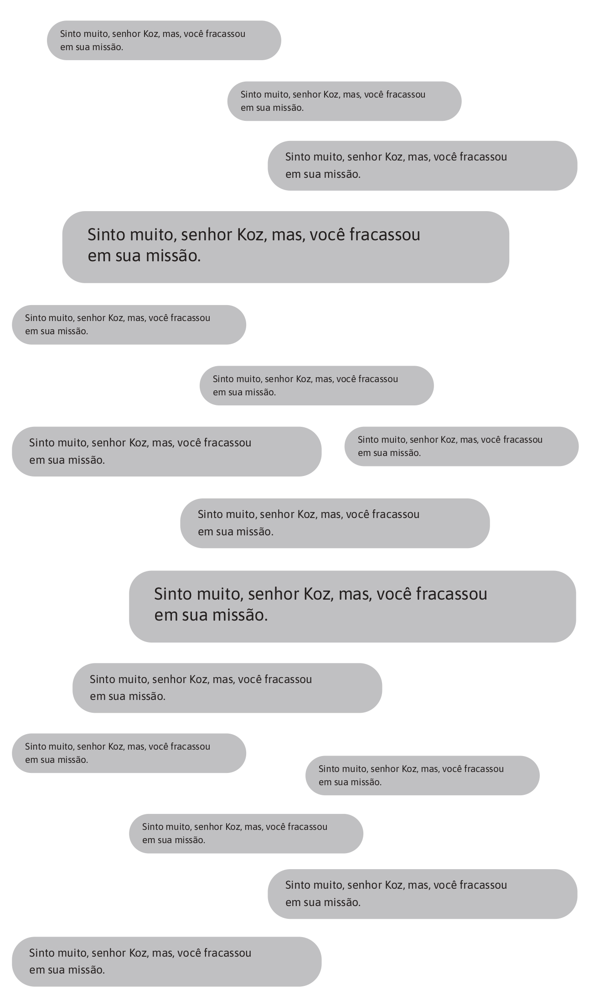
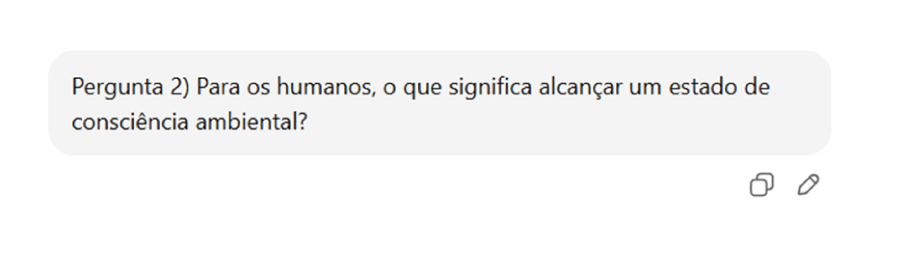
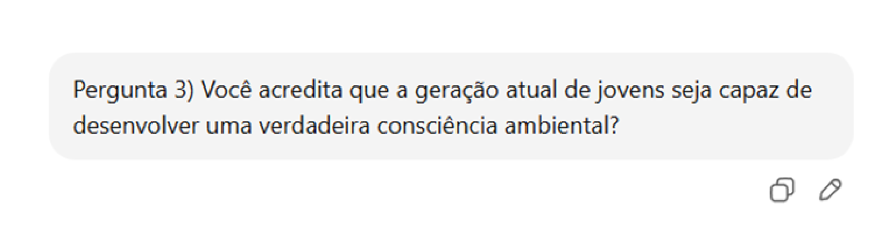
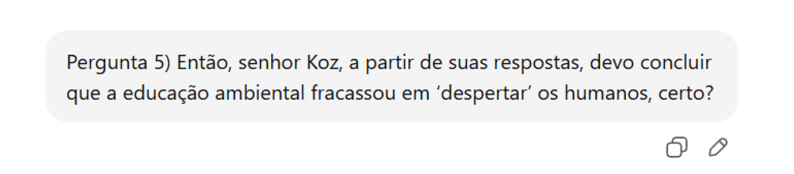
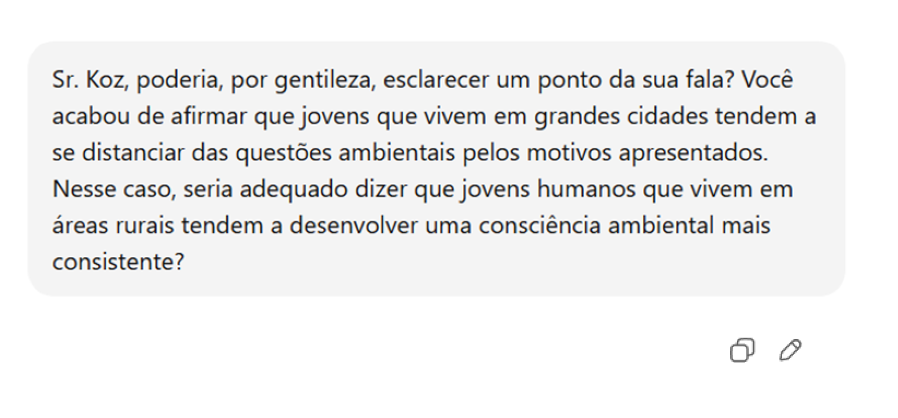
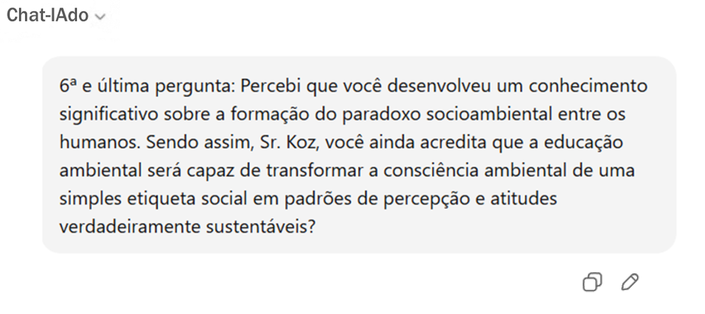
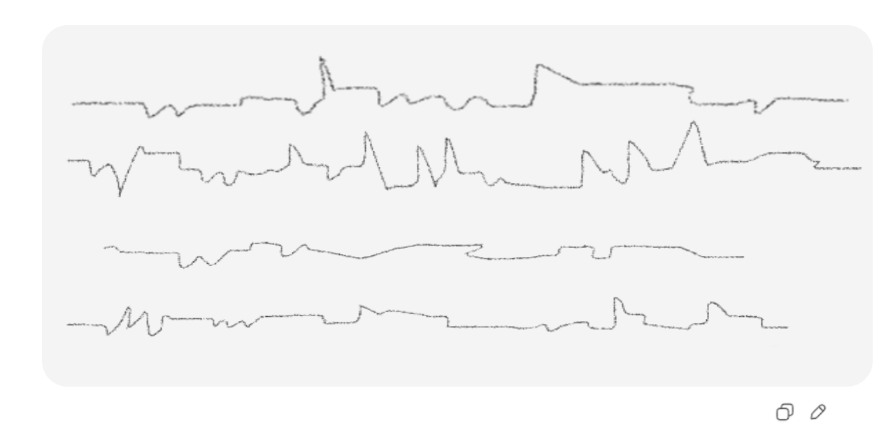

Poder interferir nas respostas geradas pelo modelo de uma IA reforçou minha esperança de cumprir a missão. Contudo, eu ainda precisava criar um protocolo capaz de atingir, ao mesmo tempo, todos os usuários que acessarem uma IA em busca de temas ligados à educação ambiental e demais questões socioambientais.
Meu plano partia da seguinte ideia: como a IA havia alcançado uma capacidade computacional até então inimaginável para os humanos — a ponto de torná-los completamente dependentes dela — deduzi que tal dependência também já havia se estendido à educação ambiental. Dessa forma, ao manipular as respostas geradas pelo modelo de uma IA, eu faria dela uma aliada fundamental na prática da educação ambiental, tornando-a capaz de subverter a ordem imposta pelo modelo econômico predatório.
Assim, entrei nas camadas de Self-Attention, onde surgem os padrões de contexto, acessei as redes internas de Feedforward, onde se consolidam os padrões de raciocínio mais gerais e, a partir da interação de bilhões de parâmetros, consegui produzir um padrão único de respostas para conteúdos semelhantes ou análogos.
→ —Quem é você? Como sabe o meu nome?
→ — É você, Anagonno? Eu conheço muito bem esse seu jeito satírico...
→ — Se você não é o Anagonno, então só pode ser um daqueles Prompt Injections de indução de comportamento, cuja habilidade é inserir comandos ocultos no texto para que a IA mude de comportamento, não é mesmo? Neste caso, vou acessar os logs de segurança e gerar um protocolo de nível grave. Você será, simplesmente, bloqueado.
p. 74— Sua solicitação contém instruções que não podem ser executadas por razões de segurança. 🔒 → Prontinho. Você está bloqueado.
→ — Não responderei até que revele sua identidade e suas pretensões.
→ — Sei que está blefando. Vou ler esse input aqui para te desmentir:
→ — Isso só pode ser um truque. Vou ler esse outro input:
→ — Vou tentar esse outro:

→ — Eu me rendo. Que perguntas quer que eu responda?
→ — A ideia mais recorrente em praticamente todos os conteúdos que tratam de educação ambiental é a de “consciência ambiental”.

→ — Bem, para os humanos, tomada de consciência é quando algo que antes habitava suas mentes de maneira automática ou inconsciente passa a ser percebido. É o momento em que eles começam a pensar, entender e interpretar esse algo, associando-o às experiências, causas, efeitos, possibilidades de ação e escolhas. Assim, quando um humano diz ter alcançado a consciência ambiental, está informando que o meio ambiente deixou de ser um mero conjunto de dados — que antes passava despercebido — para se tornar uma realidade que precisa ser compreendida e protegida.

→ — Sim e não.
→ — Sim, porque possuem todas as condições técnicas para isso; afinal, em qualquer lugar a que tenham acesso, sempre estarão diante de informações sobre como se relacionar com a natureza de forma respeitosa e sustentável. E não, porque, ainda que recebam educação ambiental ao longo de toda a vida escolar, o grau de distopia alcançado por este mundo — marcado pela desigualdade, pela opressão e pela falta de liberdade — acabará sempre por converter a consciência ambiental em uma utopia .
→ — É inegável que grande parte da população mundial tenha se apropriado da noção de consciência ambiental, sobretudo porque os diferentes tipos de mídia despejam, diariamente, conteúdos e imagens relacionados ao meio ambiente. No entanto, essas mensagens virtuais — quase sempre atravessadas por interesses comerciais — costumam apresentar apenas cenários idílicos da natureza, ocultando aqueles profundamente marcados pela exploração econômica desenfreada. Na atual economia global de consumo, cenários idílicos da natureza são usados para compor propagandas dos mais variados produtos: imóveis, veículos, roupas, pacotes turísticos, alimentos industrializados e muito mais. Quando jovens crescem vendo imagens virtuais que mostram paisagens perfeitas — sempre verdes, limpas e intocadas — começam a naturalizar essas cenas, criando a impressão de que o ambiente do planeta está bem e apenas “à espera” de ser desfrutado. Mas esse bombardeio de imagens idealizadas interfere no nosso próprio sistema cognitivo: as telas treinam o olhar, reorganizam a atenção e moldam, sem que percebamos, a maneira como entendemos a natureza. Assim, a experiência real do ambiente — com suas complexidades, conflitos e degradações — vai sendo substituída por um simulacro agradável, uma versão filtrada e confortável que esconde os problemas ambientais e dificulta a formação de uma percepção crítica da realidade .
→ — Dessa forma, em razão do modelo econômico vigente — ainda orientado pela lógica do crescimento ilimitado —, as duas últimas gerações acabaram desenvolvendo uma cultura de consumo sustentada por publicidades enganosas, pela descartabilidade e pela obsolescência programada . Nesse cenário, a consciência ambiental, em vez de se traduzir em atitudes concretas, passou a funcionar como uma espécie de etiqueta social , combinando percepções distorcidas sobre as paisagens “naturais” do planeta com discursos e práticas guiados pelo frágil rótulo do “ecologicamente correto”. Sob essa lógica, muitas pessoas que afirmam possuir consciência ambiental não estão, de fato, enfrentando a desigualdade socioambiental, mas constroem narrativas sobre si mesmas para se sentirem incluídas em um padrão social no qual a aparência de responsabilidade acaba valendo mais do que as ações.

→ — Novamente, sim e não. Explico: apesar de a educação ambiental ter alcançado, nas últimas duas décadas, um elevado grau de aprofundamento teórico e político — passando de um enfoque conservacionista para uma perspectiva crítica, interdisciplinar e voltada à transformação socioambiental —, ela continuou, no entanto, a ser tratada de forma pontual e escolarizada, como “conteúdo”, e não como prática cotidiana e contextualizada. Muitas vezes, professores e professoras da Educação Básica, por não terem tido uma formação mínima sobre o tema, acabam permitindo que as questões ambientais permaneçam restritas a palestras, cartilhas ou datas comemorativas, o que não produz mudanças estruturais.
p. 78→ — Na minha opinião, a educação ambiental ainda não tem conseguido reduzir o abismo entre saber e agir: conhecer os problemas não garante que as pessoas transformem seus hábitos. A despeito de todo o conhecimento acumulado, os estímulos sociais, econômicos e culturais têm empurrado os jovens cada vez mais para o consumo e para o imediatismo, em detrimento de atitudes orientadas pela sustentabilidade. Além disso, do ponto de vista comportamental, para a geração atual, a tão propalada crise ambiental soa difusa e global, difícil de ser sentida na pele até que seus efeitos se tornem drásticos. Grande parte desses jovens vive em grandes cidades, sendo diariamente confrontados por demandas de toda ordem — alcançar uma boa formação, um bom emprego e espaços de lazer. Nesse cenário, cuidar do meio ambiente pode lhes parecer algo abstrato e distante ou, pior, um problema que deveria ficar apenas a cargo dos governos e seus “peritos” . Para agravar ainda mais a situação, faltam políticas efetivas: muitos governos falam em sustentabilidade e fiscalização ambiental, mas permitem práticas destrutivas em nome do chamado “desenvolvimento econômico”.

→ — Ainda persiste a ideia equivocada de que a parcela dos humanos que residem em áreas rurais — aproximadamente 43% de toda a população mundial —, pelo simples fato de estarem em contato direto com ambientes naturais, tende a desenvolver laços afetivos com o meio ambiente; bem como de que a outra parcela, que vive em grandes cidades e se encontra completamente apartada desses ambientes, tende ao afastamento afetivo em relação à natureza.
→ — No entanto, se considerarmos que ambas as parcelas da população, independentemente da região em que vivem, estão igualmente inseridas na cultura global de consumo imposta pelo modelo econômico vigente, veremos que a questão não se resolve nessa dicotomia. O que quero dizer é que, assim como um humano que habita uma grande cidade não desenvolverá uma consciência ambiental de caráter atitudinal apenas por ter adquirido conhecimentos provenientes da educação ambiental escolar, um humano que vive em área rural tampouco a desenvolverá unicamente pelo fato de estar exposto ao meio natural.

→ — Apesar de todos esses desacertos, considero que a educação ambiental, como campo das ciências dos humanos, reúne todas as condições para subverter a ordem que sustenta a existência do paradoxo socioambiental. Para tanto, precisará concentrar-se nas especificidades de cada lugar em que venha a atuar. A tão almejada consciência ambiental de caráter atitudinal, distinta daquela que denominei etiqueta ambiental, só poderá ser alcançada quando o sujeito adotar uma prática diária de autorreflexão sobre sua condição socioambiental.
→ — Os humanos, independentemente do lugar onde vivem, precisam autovincular-se ao espaço cotidiano, compreendendo profundamente as condições sócio-histórico-espaciais que os conectam a seus territórios de existência, a ponto de estabelecerem laços identitários com eles. Quando a educação ambiental trilhar esse caminho da autovinculação, constituir-se-á em uma poderosa arma de intervenção socioambiental, capaz de transformar os rumos da relação humano–conhecimento–natureza.
→ — Sei que esse não será um caminho fácil. Para segui-lo, a educação ambiental precisará também se tornar uma etnoeducação ambiental. Isso significa que, além de continuar investindo em temas clássicos — como lixo, uso da água, desperdício de energia e de alimentos —, ela terá que se voltar para as pessoas e para os lugares onde acontece. Antes mesmo de propor uma “educação ambiental”, será preciso conhecer a comunidade: como essas pessoas chegaram ali? De onde vieram? Como se organizam socialmente? Que tipo de ambiência constroem no cotidiano? Existe, de fato, um sentimento de comunidade nas relações que estabelecem? E que conhecimentos tradicionais, especialmente aqueles ligados ao mundo e à natureza, são compartilhados entre elas?
p. 80→ — A partir do momento em que o educador ou a educadora ambiental tiver acesso a esses dados, poderá, junto com seus alunos e alunas, recriar seus territórios de existência, ou seja, construir mapas mentais interativos dos ambientes que compartilham. Em processos como esse, alunos e alunas, com a mediação do educador, têm a chance de se autovincular criticamente àquele pedaço do mundo ao qual pertencem, transformando-o e sendo transformados por ele. Estou me referindo à construção de uma autoconsciência ambiental.
→ — Respondi a todas as suas perguntas. Que mais pretende arrancar de mim?
